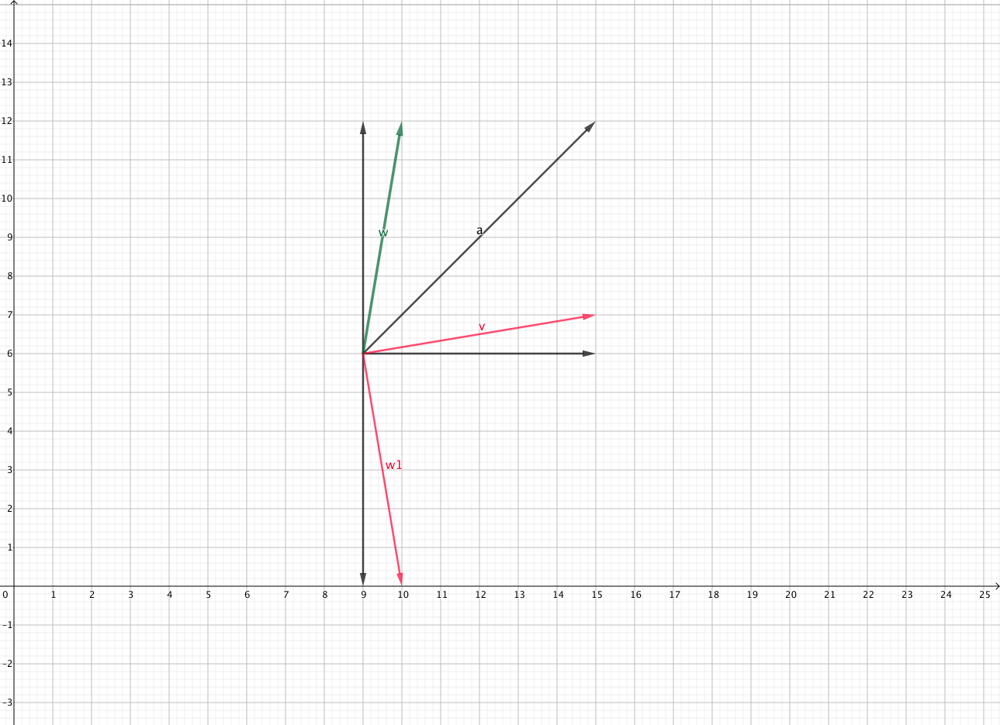

Java Rotate 2d Array 90 degrees
public static void rotate90(int[][] arr){
if(arr != null){
int len = arr.length;
for(int k=0; k < len/2; k++){
for(int i=k; i < len-1-k; i++){
int tmp = arr[k][i];
arr[k][i] = arr[len-1-i][k];
arr[len-1-i][k] = arr[len-1-k][len-1-i];
arr[len-1-k][len-1-i] = arr[i][len-1-k];
arr[i][len-1-k] = tmp;
}
}
}
}
--------------------
[1][2][3]
[4][5][6]
[7][8][9]
--------------------
[7][4][1]
[8][5][2]
[9][6][3]
--------------------
Rotate 2d array 90 degrees with geometry technic
How to find a vector that is perpendicular to $v$
1. find the reflection of $v$ about the line $y = x$
2. flip the reflection point about $x$-Axis
1. Given a vector $v$
2. $w$ is the reflection about $y=x$
3. $w_{1}$ is the flip of reflection point about $x$-Axis
4. we have: $w_{1} \perp v$
5. we can apply above processes to roate 2d array in 90 degrees clockwise
Note: if we want to rotate 2d array 90 degrees counter-clockwise
we need to flip the reflection point about $y$-Axis

/**
* Rotate 2d array 90 degrees in counter-clockwise
*
* 1. swap x, y. e.g. (x, y) -> (y, x)
* 2. swap elements: [k][i], [k][len-1-i].
* e.g tmp = arr[k][i],
* arr[k][i] = arr[k][len - 1 - i], arr[k][len-1-i] = tmp
*/
public static void rotateArr90(int[][] arr){
if(arr != null){
// assume the lengths of row and column are the same
int len = arr.length;
// (x, y) -> (y, x)
for(int i=0; i < len; i++){
for(int j=i; j < len; j++){
int tmp = arr[i][j];
arr[i][j] = arr[j][i];
arr[j][i] = tmp;
}
}
// flip all rows
for(int i=0; i < len; i++){
for(int j=0; j < len/2; j++){
int tmp = arr[i][j];
arr[i][j] = arr[i][len - 1 - j];
arr[i][len - 1 - j] = tmp;
}
}
}
}